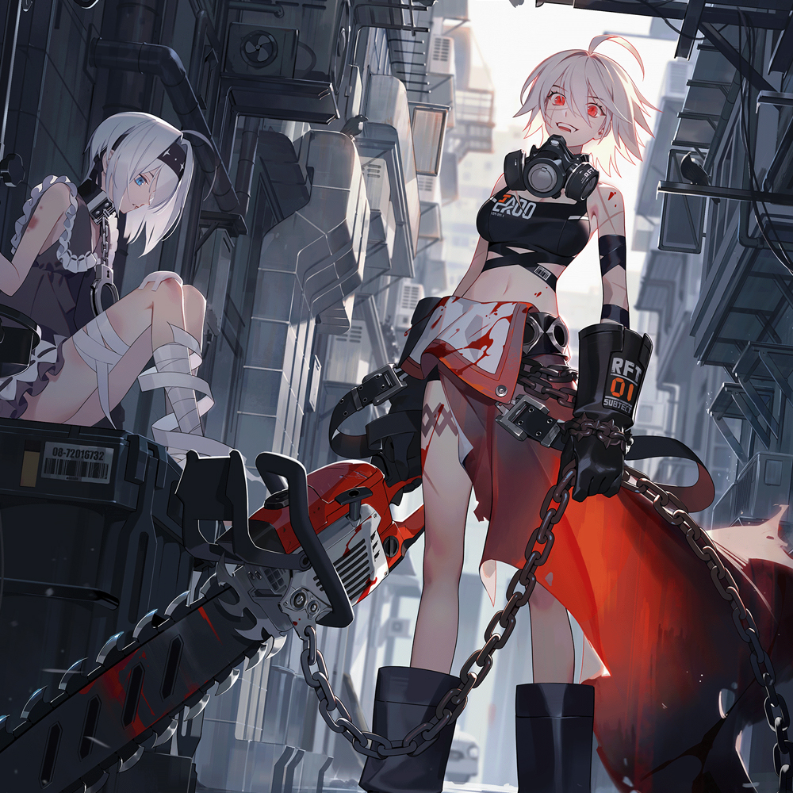

OST
[OST] Main Theme for "Eternal Return"

Eternal World
Neptune's development subsidiary Nimble New Run has released the main theme song of the original soundtrack of its own battle royale game "Black Survival: Forever Regression (hereinafter referred to as Eternal Regression)" for PCs. The OST, whose main title is "Eternal World," was produced under the supervision of music director Yang Seung-hyuk, who produced OST music for famous games such as League of Legends and Prince Yeongyo. The newly released theme song "Eternal World" contains lyrics that clearly imply the world view of the eternal return and melts the hearts of users who play in the game's world view.
작곡: 양승현 / 보컬: 윤지영
캐릭터 태마곡
플레이
쿼터뷰 형식의 전투 스타일과 배틀로얄
독특한 크래프팅 시스템이 합쳐진 "새로운 형태의 서바이벌 MOBA 게임"
이터널 리턴을 플레이해보세요